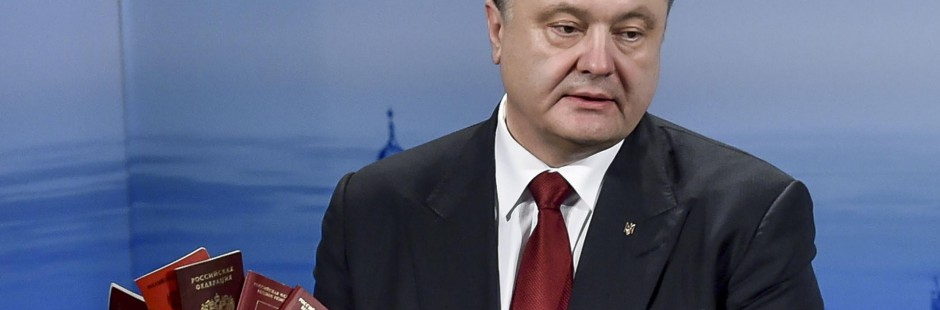

А. Шарий: Порошенко смешит, Яценюк «маргиналит», страна скользит
Прошлую неделю можно было смело назвать «Все, что вы хотели знать о развале президентской власти».
Безусловно, симптоматика этого развала отрывочна, там «рука заболела», а тут «нога волочится», однако вывод о состоянии всего организма в нужных местах сделали – можно не сомневаться.
Потенциальные союзники поняли со всей очевидностью – Порошенко делает шаги, которые выставляют его уже не просто в негативном свете как главу державы, но и откровенно характеризуют как не очень умного человека.
Если с подлецом, популистом или «нашим сукиным сыном» западные партнеры могут иметь дело, то с дураком, публично выставляющим себя на посмешище, они могут игру прекратить.
Сначала Петр Алексеевич делает подарок сенатору Джону МакКейну, «другу Украины». Он назначает МакКейна членом Совещательного международного совета реформ, при этом мнения сенатора… не спрашивает.
Возникает крайне неприятная неловкость, американец ссылается на необходимость «взвесить все за и против». Что он говорит вне прессы и о Порошенко и о «подарке» — можно только представить, но в итоге МакКейн отказывается.
Абсолютно нелепое положение, в которое попадает Порошенко со своим странным «подарком», усугубляется ответом Марка Цукерберга.
В сотый раз обсуждать абсурдность ситуации, при которой первое лицо государства с 40-миллионным населением начинает вдруг заявлять о приоритетности открытия представительства соцсети и важности отечественного модерирования постов в Facebook излишне.
Порошенко не мог, не должен был не видеть, что выглядит глупо, когда просит главу частной компании потратить немалые средства и пойти на абсолютно бессмысленное открытие представительства. Не увидел. Попросил. И получил вполне закономерный ответ, который увидел весь мир.
1) Никакого российского офиса нет, а президент, перед тем, как публично обращаться к Цукербергу, не мог этого выяснить.
2) Посты блокировались отнюдь не просто из-за фото «девочки, потерявшей папу», а из-за подписей к ней. Но президент не мог перед своим обращением этого выяснить.
3) На открытие представительства Марк Цукерберг ответил непрямым отказом, выдержав, пусть и минимально, дипломатическую линию и не позволив превратить Порошенко в полное посмешище. Однако кадры того, как собравшиеся в зале молодые и не очень люди хохочут, узнав о том, что президент Украины попросил об офисе, обошли весь земной шар.
Дабы полностью прикончить то, что еще недавно было репутацией вдумчивого и рассудительного политика, пресс-служба Порошенко делает официальное сообщение о том, что Президент Финляндии пригласил Петра Алексеевича посетить линию Маннергейма.
Линия Маннергейма находится в глубине территории России. Вполне вероятно, что пригласили Порошенко в музей Маннергейма, после чего пресс-секретарь, получивший неверную информацию от переводчика, выдал этот абсурд на потеху всему миру.
На фоне шутовства Порошенко Арсений Петрович Яценюк решил провести своего рода месячник радикальных заявлений. С одной стороны, Премьер вынужден радикальничать из-за падения собственного рейтинга и рейтинга политсилы.
С другой стороны, договоренность с Порошенко о ненападении в плане кадровых изменений и уход Яресько из потенциальных конкурентов (провалы в переговорах с кредиторами перечеркнули возможность смещения с поста Арсения Петровича министром финансов) развязали Премьеру руки. И язык.
При этом критика Кабмина президентским окружением также продолжается. На этот раз негативные характеристики дарил позиционируемый реформатором Михаил Саакашвили. Не видит он, мол, желания реформ у власти. Под «властью» подразумевалось, вне всякого сомнения, правительство, не желающее выполнять мудрые заветы Президента:
«Я считаю, что изменения возможны только путем давления общества, так как наверху я не вижу политической воли. Во-первых, сама структура украинской власти не позволяет, даже имея политическую волю, ее быстро реализовывать».
Премьер же, похоже, заявлениями решил закончить свой образ радикала, который за словом в карман не полезет. При этом отдельные заявления звучат несколько глуповато. К примеру, «наезд» на Юлию Тимошенко:
«Чтобы закончить эту лживую истерику по тарифам, когда графики показывают, которые не соответствуют действительности, я провел совещание с НКРЭ, «Нафтогазом», «Газпромом». И у нас следующее предложение. Все тарифы, которые установлены независимым органом, это не правительство, должны пройти аудит четырех крупнейших мировых компаний».
Какие именно совещания с «Газпромом» провел Яценюк, он предпочел не рассказывать. Но о Тимошенко высказался вполне недвусмысленно:
«И мы тогда закроем эту политологическую лавку о том, кто борется за судьбу украинцев. Надо было 5 лет назад бороться, когда подписывали цену на газ»
После этого Яценюку вполне логично было бы добавить: «и именно поэтому мы долгое время всему миру сообщали, что в подписании цены на газ Тимошенко не было ничего предосудительного, именно поэтому лично я вопил на каждом углу о немотивированных политпреследованиях ЮВТ».
Ответ Яценюка на вопрос Олега Ляшко по поводу тарифов также достоин особого внимания:
«Сейчас идет политическая и лживая дискуссия о размерах тарифов. Для того, чтобы снять дискуссию и упреждая сразу вопросы наших политических друзей из коалиции – потому что оппозиции сейчас не надо ничего делать, они сейчас вылезли на пальму и ждут, пока проплывет труп демократической коалиции…»
Пальма, труп коалиции, российский сценарий и так далее. Вместо четкого ответа на четкий вопрос.
В общем, если мы взглянем на ситуацию с премьером и президентом полугодичной давности, к примеру, то увидим приблизительно тот же популизм, тот же псевдо-радикализм, навязшую в зубах «российскую угрозу». Однако все отчетливее заметна маргинализация и заявлений, и обещаний.
Нет сомнений в том, что Запад давно пересмотрел свои взгляды на своих же фаворитов украинского политикума. Однако вопрос о замещении их хоть и стоит слишком остро, но нерешаем ввиду отсутствия сколь-либо внятной альтернативы. Тем временем скольжение вниз, обусловленное элементарными законами земного притяжения, действующими на не сопротивляющееся тело государства, продолжается…
Анатолий Шарий